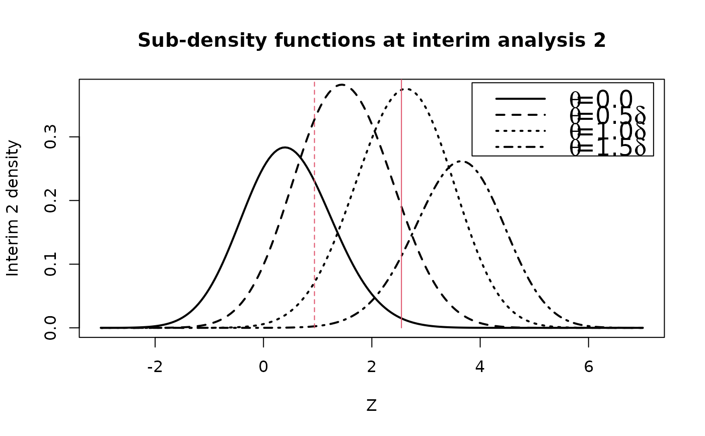

gsDensity.RdGiven an interim analysis i of a group sequential design and a vector
of real values zi, gsDensity() computes an interim density
function at analysis i at the values in zi. For each value in
zi, this interim density is the derivative of the probability that
the group sequential trial does not cross a boundary prior to the
i-th analysis and at the i-th analysis the interim Z-statistic
is less than that value. When integrated over the real line, this density
computes the probability of not crossing a bound at a previous analysis. It
corresponds to the subdistribution function at analysis i that
excludes the probability of crossing a bound at an earlier analysis.
The initial purpose of this routine was as a component needed to compute the
predictive power for a trial given an interim result; see
gsPP.
See Jennison and Turnbull (2000) for details on how these computations are performed.
gsDensity(x, theta = 0, i = 1, zi = 0, r = 18)
| x | An object of type |
|---|---|
| theta | a vector with \(\theta\) value(s) at which the interim density function is to be computed. |
| i | analysis at which interim z-values are given; must be from 1 to
|
| zi | interim z-value at analysis |
| r | Integer value controlling grid for numerical integration as in
Jennison and Turnbull (2000); default is 18, range is 1 to 80. Larger
values provide larger number of grid points and greater accuracy. Normally
|
The input vector zi.
The input vector
theta.
A matrix with length(zi) rows and
length(theta) columns. The subdensity function for z[j],
theta[m] at analysis i is returned in density[j,m].
The manual is not linked to this help file, but is available in library/gsdesign/doc/gsDesignManual.pdf in the directory where R is installed.
Jennison C and Turnbull BW (2000), Group Sequential Methods with Applications to Clinical Trials. Boca Raton: Chapman and Hall.
library(ggplot2) # set up a group sequential design x <- gsDesign() # set theta values where density is to be evaluated theta <- x$theta[2] * c(0, .5, 1, 1.5) # set zi values from -1 to 7 where density is to be evaluated zi <- seq(-3, 7, .05) # compute subdensity values at analysis 2 y <- gsDensity(x, theta = theta, i = 2, zi = zi) # plot sub-density function for each theta value plot(y$zi, y$density[, 3], type = "l", xlab = "Z", ylab = "Interim 2 density", lty = 3, lwd = 2 )title("Sub-density functions at interim analysis 2")legend( x = c(3.85, 7.2), y = c(.27, .385), lty = 1:5, lwd = 2, cex = 1.5, legend = c( expression(paste(theta, "=0.0")), expression(paste(theta, "=0.5", delta)), expression(paste(theta, "=1.0", delta)), expression(paste(theta, "=1.5", delta)) ) )# add vertical lines with lower and upper bounds at analysis 2 # to demonstrate how likely it is to continue, stop for futility # or stop for efficacy at analysis 2 by treatment effect lines(rep(x$upper$bound[2], 2), c(0, .4), col = 2)# Replicate part of figures 8.1 and 8.2 of Jennison and Turnbull text book # O'Brien-Fleming design with four analyses x <- gsDesign(k = 4, test.type = 2, sfu = "OF", alpha = .1, beta = .2) z <- seq(-4.2, 4.2, .05) d <- gsDensity(x = x, theta = x$theta, i = 4, zi = z) plot(z, d$density[, 1], type = "l", lwd = 2, ylab = expression(paste(p[4], "(z,", theta, ")")))